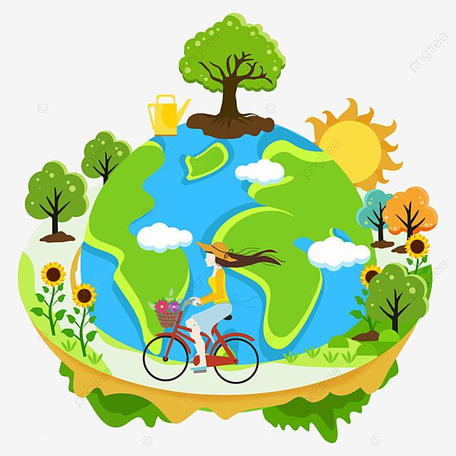

Selamat Datang di Media Pembelajaran Pedulisekitar
Pelajari tentang pencemaran lingkungan, dampaknya terhadap bumi, dan bagaimana kita berperan aktif dalam menjaganya tetap bersih dan sehat. Go Green!
Mulai Belajar
About Website
Media Pembelajaran Interaktif ini dirancang untuk membantu pelajar memahami berbagai aspek tentang Pencemaran Lingkungan secara menarik dan mudah dipahami.
Terdapat penjelasan jenis-jenis pencemaran, dampak terhadap bumi, hingga berbagai upaya pencegahan yang dapat dilakukan dalam kehidupan sehari-hari. Website ini juga menyediakan kuis interaktif sebagai sarana evaluasi pembelajaran.
